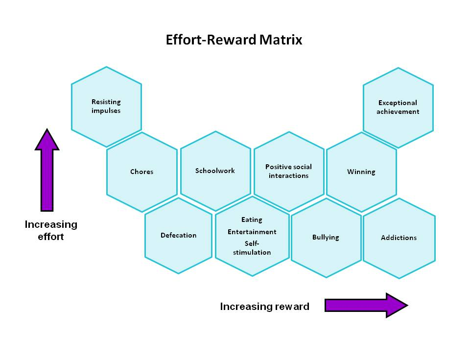

Prioritization matrix
About
A prioritization matrix is a 2×2 grid that positions options against two decision criteria — classically impact versus effort — so that the most attractive choices sort themselves into view. The quadrants tell a quick story: high-impact, low-effort items are quick wins; high-impact, high-effort items are big bets; low-impact, low-effort items are fill-ins; and low-impact, high-effort items are the money pits to avoid. Its value is speed and shared visibility: a team can place items together and reach a defensible, legible decision in minutes.
When to use
Use a prioritization matrix to choose among features, ideas, or research opportunities, and to align a team quickly around what to tackle first. The act of placing items together surfaces disagreement about impact and effort that would otherwise stay hidden.
When not to use
Avoid it when the decision genuinely depends on more than two factors, where a weighted scoring model serves better, or when the estimates of impact and effort are little more than guesses — a confident-looking grid built on weak inputs invites false certainty.
References
Examples
Click any example to view full size and visit the original source.
